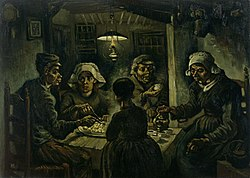
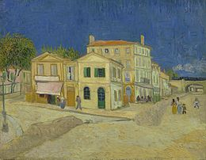
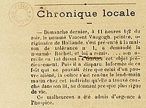
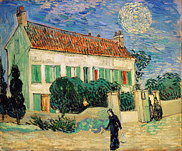

Início de vida
Vincent Willem van Gogh nasceu no dia 30 de março de 1853, em Zundert, na província predominantemente católica de Brabante do norte, no sul dos Países Baixos. Era o filho mais velho sobrevivente de Anna Cornelia Carbentus e de Theodorus van Gogh, um pastor da Igreja Reformada Neerlandesa. Van Gogh recebeu o seu nome em homenagem ao seu avô e a um irmão natimorto que nascera exatamente um ano antes. Vincent era um nome comum na família Van Gogh. O seu avô, Vincent, teve seis filhos, três dos quais se tornaram comerciantes de arte. Este Vincent também pode ter recebido o seu nome em homenagem ao seu tio-avô que tinha sido escultor.
A mãe de Van Gogh vinha de uma família próspera de Haia, enquanto seu pai era o filho mais novo de um pastor. Os dois conheceram-se quando Cornelia, a irmã mais nova de Anna, se casou com Vincent (apelidado de Cent), o irmão mais velho de Theodorus. Os pais de Van Gogh casaram-se em maio de 1851 e mudaram-se para Zundert. O seu irmão mais novo, Theodorus (apelidado de Theo), nasceu no dia 1 de maio de 1857. Existiam ainda mais um irmão chamado Cor e três irmãs: Elisabeth, Anna e Willemina (apelidada de Wil). Mais tarde, na sua vida, Van Gogh manteve o contacto apenas com Theo e Wil. A sua mãe era uma mulher rígida e religiosa, que enfatizava a importância crucial das relações familiares. O salário do seu pai era modesto, porém, a igreja fornecia aos Van Gogh uma casa, uma criada, dois cozinheiros, um jardineiro, uma carruagem e um cavalo, sendo que, Anna sempre procurou incutir nos filhos o dever de manter a alta posição social da família.
Van Gogh era uma criança séria e pensativa. Tendo sido educado em casa pela sua mãe e pela governanta, em 1860, foi enviado para uma escola na localidade e, quatro anos depois, foi colocado num internato em Zevenbergen, local onde se sentiu abandonado, razão pela qual tudo fez para voltar para casa. Mas, em vez disso, os seus pais mandaram-no para uma escola secundária de Tilburgo, onde foi extremamente infeliz. O seu interesse pela arte começou bem cedo, tendo sido encorajado a desenhar pela sua mãe ainda em criança. Os seus primeiros desenhos eram expressivos, porém, não chegavam perto da intensidade de seus trabalhos posteriores. Constantijn C. Huysmans, que fora um artista bem-sucedido em Paris, dava aulas de desenho aos estudantes em Tilburgo. Sua filosofia era rejeitar a técnica em favor da captura das impressões das coisas, particularmente a natureza e os objetos comuns. A profunda infelicidade de Van Gogh parece ter ofuscado as aulas que frequentou, já que, aparentemente, tiveram poucos efeitos, tendo regressado a casa repentinamente em março de 1868. Van Gogh mais tarde escreveu que sua juventude foi "austera, fria e estéril".
Em julho de 1869, o seu tio Cent arranjou um trabalho a Van Gogh como comerciante de arte na empresa Goupil & Cia., na Haia. Depois de ter completado a sua formação em 1873, foi transferido para a filial da empresa em Londres, passando a morar no nº 87 da Rua Hackford em Stockwell. Este foi um período feliz para Van Gogh: estava tendo sucesso no trabalho e aos vinte anos de idade ganhava mais do que o seu pai. Johanna van Gogh-Bonger, a esposa de Theo, posteriormente afirmou que este foi o melhor período da vida do seu cunhado. Entretanto, Van Gogh apaixonou-se por Eugénie Loyer, a filha da sua senhoria. Porém, foi rejeitado depois de confessar seus sentimentos, uma vez que, Loyer estava secretamente noiva de um ex-inquilino. Van Gogh acabou por se ir isolando cada vez mais, a par com um aumento do seu fervor religioso. O seu pai e o seu tio conseguiram fazer com que fosse transferido para Paris em 1875, mas durante esta fase, Van Gogh sentia-se ressentido com a forma como a sua firma mercantilizava a arte, acabando por vir a ser demitido um ano depois.

A casa de Van Gogh em Cuesmes, onde Vincent decidiu tornar-se artista
Em janeiro de 1879, Van Gogh assumiu um cargo de missionário em Petit Wasmes no distrito belga de Borinage, tendo proporcionado que um sem abrigo vivesse nos seus confortáveis aposentos numa padaria com o objetivo de demonstrar seu apoio à sua empobrecida congregação, por sua vez, indo morar numa pequena cabana onde dormia na palha. A suas condições de vida esquálidas não agradaram as autoridades da igreja, que o dispensaram por "minar a dignidade do sacerdócio". Então, Van Gogh caminhou 75 quilometros até Bruxelas, com uma breve passagem por Cuesmes. Porém, cedeu às pressões dos seus pais para que voltasse para Etten, onde ficou até por volta de março de 1880, o que causou preocupação e frustração nos seus pais. O seu pai ficou especialmente frustrado e recomendou que o filho fosse internado num manicómio em Geel.
Van Gogh regressou a Cuesmes em agosto de 1880, tendo ido ndo morar com um mineiro até outubro daquele ano. Interessou-se pelas pessoas e pelas cenas ao seu redor, registando-as em desenhos depois de Theo lhe ter sugerido que começasse uma carreira artística rapidamente. Mais tarde no mesmo ano, viajou para Bruxelas, seguindo a recomendação do irmão para que estudasse com o artista Willem Roelofsque, por sua vez, o convenceu a ir estudar para a Academia Real de Belas-Artes, apesar do seu desgosto por escolas de arte formais. Em novembro de 1880 matriculou-se na academia, estudando anatomia e as regras padrão de sombreamento e perspectiva.
Artista emergente

Os Comedores de Batata, 1885
Em 1885, Van Gogh pintou várias naturezas-mortas. Ele completou diversos desenhos e aquarelas durante sua estadia de dois anos em Nuenen, além de quase duzentas pinturas. Sua paleta de cores consistia principalmente de tons terrosos sombrios, especialmente marrom escuro, mostrando nenhum indício das cores vívidas que distinguem seus trabalhos posteriores.
Houve o interesse de um comerciante de Paris no início de 1885. Theo perguntou ao irmão se ele tinha pinturas prontas para serem exibidas. Van Gogh respondeu em maio com seu primeiro grande trabalho, Os Comedores de Batata, e uma série de "estudos de personagens camponeses" que eram a culminação de vários anos de trabalho. Ele depois reclamou que Theo não estava se esforçando o bastante para vender suas pinturas em Paris, com o irmão respondendo que as pinturas eram muito sombrias e não se encaixavam com o estilo vivo do impressionismo. Seu trabalho foi exposto pela primeira vez em agosto nas vitrines do comerciante de arte Leurs em Haia. Uma de suas jovens modelos camponesas engravidou em setembro de 1885 e Van Gogh foi acusado de ter dado em cima dela, com o padre do vilarejo proibindo seus paroquianos de posarem para ele.
Ele mudou-se para Antuérpia em novembro e alugou um quarto sobre uma loja de artigos de pintura na Rua das Imagens. Passou a viver na pobreza e comia pouco, preferindo gastar o dinheiro enviado por Theo em materiais e modelos. Pão, café e tabaco tornaram-se sua dieta padrão. Ele escreveu ao irmão em fevereiro de 1886 que se lembrava de ter comido apenas seis refeições quentes desde maio do ano anterior. Seus dentes ficaram soltos e doloridos. O pintor dedicou-se na Antuérpia ao estudo da teoria das cores e passava tempo dentro de museus, particularmente estudando as obras de Peter Paul Rubens, ampliando sua paleta para incluir carmim, azul-cobalto e verde-esmeralda. Van Gogh comprou xilogravuras ukiyo-e japonesas nas docas, posteriormente incorporando elementos desse estilo no fundo de algumas de suas pinturas. Ele passou a beber muito outra vez e foi hospitalizado entre fevereiro e março de 1886, possivelmente também tendo sido tratado por sífilis.
Apesar de seu desgosto por estudos acadêmicos, Van Gogh fez o difícil vestibular de admissão na Academia Real de Belas-Artes da Antuérpia após se recuperar, matriculando-se em janeiro de 1886 nos cursos de pintura e desenho. Ele acabou ficando doente e exausto por tanto trabalho, dieta ruim e fumo excessivo. Van Gogh logo brigou com o diretor da academia e professor Charles Verlat por causa de seu estilo não-convencional de pintura. Também teve confrontos com seus instrutores de desenho Frans Vinck e Eugène Siberdt, com este último porque Van Gogh não seguiu o requerimento de Siberdt de que os desenhos precisavam expressar o contorno e concentrar-se nas linhas. Van Gogh deixou a academia e foi para Paris após mais uma briga com Siberdt por causa de um desenho da Vênus de Milo.
Avanço artístico

A Casa Amarela, 1888.
Em fevereiro de 1888, Van Gogh procurou um refúgio em Arles por estar doente devido bebedeiras e tosse de cigarro. Ele aparentemente mudou-se com a intenção de fundar uma colônia de artistas. O pintor dinamarquês Christian Mourier-Petersen tornou-se seu companheiro por dois meses e inicialmente a cidade lhe parecia exótica. Ele descreveu o local em uma carta como um país estrangeiro: "Os zuavos, os bordéis, a adorável pequena Arlesiana indo para sua Primeira Comunhão, o padre em seu sobrepeliz, que parece um rinoceronte perigoso, as pessoas bebendo absinto, todas me parecem criaturas de outro mundo".
O tempo passado em Arles foi um dos períodos mais prolíficos da carreira de Van Gogh: ele completou duzentas pinturas e mais de cem desenhos e aquarelas. Ele ficou encantado pela paisagem local e a luz; seus trabalhos nesse período são ricos em amarelo, azul ultramarino e malva. Seus quadros incluem colheitas, campos de trigo e marcos rurais gerais da área, como por exemplo O Velho Moinho, uma estrutura pitoresca acima dos campos de trigo. Esta foi uma de sete telas enviadas para Pont-Aven em troca de obras de Gauguin, Bernard, Charles Laval e outros.
O tempo passado em Arles foi um dos períodos mais prolíficos da carreira de Van Gogh: ele completou duzentas pinturas e mais de cem desenhos e aquarelas. Ele ficou encantado pela paisagem local e a luz; seus trabalhos nesse período são ricos em amarelo, azul ultramarino e malva. Seus quadros incluem colheitas, campos de trigo e marcos rurais gerais da área, como por exemplo O Velho Moinho, uma estrutura pitoresca acima dos campos de trigo. Esta foi uma de sete telas enviadas para Pont-Aven em troca de obras de Gauguin, Bernard, Charles Laval e outros.
Gauguin concordou em visitar Arles em 1888, com Van Gogh esperando alcançar uma amizade e a realização da sua ideia de um coletivo de artistas.
Hospital em Arles

Relato do jornal local Le Forum Républicain de 30 de dezembro de 1888 sobre a automutilação de Van Gogh
Van Gogh voltou para a Casa Amarela depois de ter brigado com Gauguin, ouvindo vozes e cortando sua orelha esquerda com uma lâmina, não se sabe se parcialmente ou totalmente, causando um sangramento sério. Ele enfaixou a ferida, enrolou a orelha em papel e enviou o pacote para Gabrielle Berlatier, criada de um bordel que frequentava com Gauguin. Van Gogh foi encontrado inconsciente na manhã seguinte por um policial e levado ao hospital, onde foi tratado por Félix Rey, um jovem médico ainda em treinamento. A orelha foi entregue no hospital, porém Rey não tentou recolocá-la pois muito tempo já tinha passado.
Ele não tinha memórias do incidente, o que sugere que talvez tenha passado por um surto mental agudo. O diagnóstico do hospital foi "mania aguda com delírio generalizado", com a polícia local ordenando dias depois que Van Gogh fosse deixado nos cuidados do hospital. Gauguin imediatamente notificou Theo, que em 24 de dezembro havia pedido em casamento Johanna Bonger, irmã de seu amigo Andries Bonger. Ele correu para a estação na mesma tarde e pegou um trem noturno para Arles. Theo chegou na manhã de natal e confortou o irmão, que parecia semi-lúcido. Ele retornou para Paris naquela tarde.
Apesar dos diagnósticos pessimistas, Van Gogh recuperou-se e voltou para a Casa Amarela em 7 de janeiro de 1889. Ele passou os meses seguintes entre hospital e casa, sofrendo alucinações e delírios de envenenamento. A política fechou sua casa em março depois de uma petição assinada por trinta pessoas, incluindo a família Ginoux, lhe ter descrito como "o louco ruivo". Van Gogh voltou para o hospital. Signac o visitou duas vezes em março e no mês seguinte Van Gogh se mudou para quartos que eram propriedade de Rey, já que uma inundação tinha danificado algumas de suas pinturas na sua casa própria. Ele deixou Arles dois meses depois e se internou voluntariamente em um hospício de Saint-Rémy-de-Provence. Van Gogh deu a Rey seu Retrato do Doutor Félix Rey, porém o médico não gostou da obra e doou a pintura a outrem. Van Gogh por volta da mesma época escreveu: "Às vezes humores de indescritível angústia, às vezes momentos em que o véu do tempo e a fatalidade das circunstâncias parecem ser despedaçados por um instante.
Saint-Rémy

A Noite Estrelada, junho de 1889
Ele se internou no hospício de Saint-Paul-de-Mausole em 8 de maio de 1889 acompanhado por seu cuidador Frédéric Salles, um clérigo protestante. O local ficava menos de trinta quilômetros de Arles. Van Gogh tinha duas celas com janelas gradeadas, uma das quais ele usou como estúdio. A clínica e seu jardim tornaram-se temas de seus quadros. Ele realizou vários estudos dos interiores do hospital como Corredor no Hospício e Entrada do Hospício. Algumas de suas obras da época foram caracterizadas por redemoinhos, por exemplo A Noite Estrelada. Era-lhe permitido pequenas caminhadas supervisionadas, e durante esse período ele pintou ciprestes e oliveiras, incluindo Oliveiras com Alpilles ao Fundo, Campo de Trigo com Ciprestes e Estrada com Cipreste à Noite. Ele produziu outras duas versões de Quarto em Arles em setembro de 1889.
Van Gogh sofreu de depressão severa entre fevereiro e abril de 1890. Ele ficou depressivo e incapaz de escrever, porém ainda assim conseguiu pintar e desenhar um pouco, mais tarde escrevendo a Theo que fizera algumas pequenas telas "da memória ... reminiscências do Norte". Dentre essas estava Duas Camponesas Cavando em um Campo Coberto ao Pôr do Sol. Hulsker acredita que esse pequeno grupo de pinturas formou os núcleos de muitos desenhos e estudos representando paisagens e pessoas com quem Van Gogh trabalhou durante esse tempo. Ele comentou que este pequeno período foi a única época que a doença de Van Gogh afetou sua arte. Van Gogh pediu a sua mãe e irmão para que lhe enviassem desenhos e esboços que tinha feito no início da década de 1880 para que assim pudesse trabalhar em obras novas a partir delas. Pertencente a esse período é Velho Triste ("No Portão da Eternidade"), um estudo colorido que Hulsker descreve como "outra recordação inconfundível de tempos passados". Suas últimas pinturas mostram um artista no auge de suas habilidades, "ansiando por concisão e graça" segundo o crítico Robert Hughes.
Auvers-sur-Oise

Casa Branca à Noite, 1890
Van Gogh deixou o hospício de Saint-Rémy em maio de 1890 e mudou-se para o vilarejo de Auvers-sur-Oise no norte da França a fim de ficar mais perto de Theo e do doutor Paul Gachet. Este era um pintor amador e médico homeopata que havia tratado vários outros artistas, tendo sido recomendado por Camille Pissarro. A primeira impressão de Van Gogh foi que Gachet "parecia-me mais doente do que eu, ou vamos dizer tanto quanto".
O pintor Charles-François Daubigny havia mudado-se para Auvers em 1861, com outros artistas acabando indo para lá também, incluindo Jean-Baptiste-Camille Corot e Honoré Daumier. Van Gogh completou em julho três pinturas chamadas de Jardim de Daubigny, uma das quais é provavelmente seu último trabalho.
Van Gogh escreveu em julho que tinha ficado absorto "na imensa planície contra as colinas, sem limites como o mar, de um delicado amarelo". Ele tinha inicialmente ficado fascinado pelas colinas em maio, quando o trigo estava jovem e verde. Eles os descreveu em julho para Theo como "vastos campos de trigo sob céus turbulentos". Van Gogh disse que os campos representavam sua "tristeza e extrema solidão", além de que as "telas irão lhe dizer o que não consigo falar em palavras, ou seja, quão saudável e revigorante acho o campo". Campo de Trigo com Corvos de julho de 1890 é uma pintura que Hulsker argumenta estar associada com "melancolia e extrema solidão". O autor identificou sete outras pinturas de Auvers que seguiram-se à finalização de Campo de Trigo com Corvos.